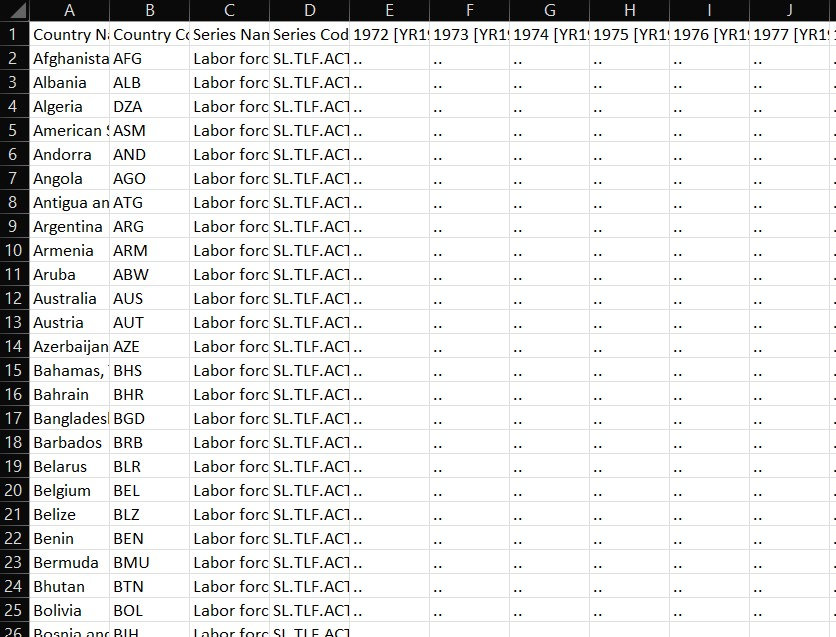

Module 2.1
What is Tidy Data?
- Create a project in RStudio for Module 2.
- Create a QMD file in your Module 2 project folder for this lesson.
- Create a data subfolder in your Module 2 project folder to store any data files you download.
- Load
readranddplyrpackages for the exercises in this module.
Overview
Before we can analyze or visualize data, we need to understand its structure and quality. In this module, we explore where data comes from, how it is typically organized in R, and what it means for data to be tidy and clean. We introduce key concepts such as tabular data, variables, observations, and units of analysis, and we explain the principles of tidy data—a structure that makes data analysis more straightforward and consistent. We also discuss the importance of clean data, which ensures that values are well-formatted, column names are usable, and missing or duplicated entries are handled. By the end of the module, you will be able to assess the structure and quality of a dataset and begin transforming it into a form suitable for analysis.
Where Does Data Come From?
Data enters our workflow in many ways. Often, it is sent to us directly by a boss or a client, usually in the form of a spreadsheet or CSV file. Sometimes we collect it ourselves through surveys, or we might use data collected by someone else. Increasingly, data is also available online, either for download or through scraping techniques. In R, we often work with data that comes packaged in libraries, such as unvotes or vdemlite. Many datasets can also be accessed programmatically through application programming interfaces, or APIs. Regardless of the source, the structure and quality of the data are not guaranteed, which brings us to the question of what makes data usable in practice.
Many packages ship with their own inbuilt datasets. For example, the ggplot2 package includes the mpg dataset, which contains information about fuel economy for various car models. Similarly dplyr includes the starwars dataset, which contains information about characters from the Star Wars universe.
To find out what datasets are included in a package, you can use the data(package = "package_name") function. For example, data(package = "ggplot2") will list all datasets available in the ggplot2 package. To use the datasets, you can load the package and simply call the dataset by its name, like mpg or starwars.
Getting Started with Data
Most of the data we encounter in applied work are tabular in nature. This means they are organized into rows and columns, and are sometimes referred to as rectangular data. In R, the standard way to represent this kind of data is with a data frame. Each column in the data frame corresponds to a variable or attribute, such as GDP per capita or life expectancy. Each row corresponds to a single unit of observation, such as a country, individual, or point in time.
A data frame is built around a unit of analysis–the entity or level at which observations are recorded. In a cross-sectional dataset, the units might be countries, states, cities, or individuals at a specific moment. In a time-series dataset, the units are often repeated over time such as countries measured annually from 1990 to 2020. Understanding the unit of analysis is key to interpreting and analyzing data correctly.
The Concept of Tidy Data
To work effectively with data, especially in the R ecosystem, it is helpful to adhere to a structure known as tidy data. In tidy data, each column is reserved for a single variable, each row contains exactly one observation, and each cell holds a single value. This format aligns with the expectations of many functions in the tidyverse, making the data easier to filter, transform, and visualize. Tidy data is not merely a stylistic preference–it is a convention that supports a consistent and predictable approach to analysis.
Tidy Data Example
The structure of tidy data can be illustrated visually. The image below shows a dataset where each column is a variable, each row is a separate case, and each cell contains a single measurement:

This clean organization contrasts sharply with the ad hoc formatting often encountered in real-world data files.
What are Clean Data?
Where tidy data is about structure, clean data is about making sure that data are free of errors and inconsistencies that make analysis difficult or misleading. This includes ensuring that column names are not duplicated and are easy to reference in code. It also means that missing values have been addressed, either through imputation or removal. Clean data should not contain extra or blank rows or columns, and all values should be stored in the proper format—for example, dates should be stored as actual date objects rather than character strings. Clean data allow us to trust the integrity of our analysis and avoid downstream issues.
Messy Data Example
To appreciate the importance of clean data, it helps to examine what happens when data are not clean or tidy. The image below shows an example of messy data—likely extracted from a real-world spreadsheet—where variable names may be repeated, values are spread across multiple columns inappropriately, and the structure does not conform to tidy principles:

This kind of data requires significant wrangling before it can be used effectively in analysis.
How Do We Get Tidy and Clean Data?
In practice, the tidiness and cleanliness of data vary by source. Files sent from clients or supervisors often require substantial cleanup before they can be used. Survey data can range in quality depending on how it was collected and structured. Data downloaded from the web or scraped from a site often arrive in a messy format. On the other hand, data included in curated packages, or accessed through well-designed APIs, are more likely to be tidy and clean by default. We will be working with a variety of data sources throughout this course, and we will learn how to transform messy data into tidy and clean formats.
Tibbles: A Modern Take on Data Frames
We have been talking a lot about data frames as a standard way of storing tabular data in R, where each column represents a variable and each row is an observation. In this section, we introduce tibbles, which are modern reimaginings of data frames designed for use within the tidyverse. While tibbles behave much like data frames, they offer a number of important improvements that make them more predictable and user-friendly.
Tibbles avoid some of the surprising behaviors of base R data frames. For example, they do not automatically convert character strings into factors. They also display data in a more readable way, showing only the first ten rows and as many columns as fit on screen. Column names are preserved exactly as written, even if they contain spaces or other special characters. In general, tibbles are slightly easier to work with than base R data frames when writing scripts or building reproducible workflows.
Whenever you read data into R using a tidyverse package like readr, the result is automatically returned as a tibble. But you can also create your own tibble from scratch using the tibble() function from the tibble package. Here’s an example that constructs a small tibble containing names, ages, heights, and a logical variable indicating whether someone is a student:
library(tibble)
my_tibble <- tibble(
name = c("Alice", "Bob", "Charlie"),
age = c(25, 30, 35),
height = c(160, 170, 180),
is_student = c(TRUE, FALSE, FALSE)
)
my_tibbleThis tibble contains several different types of data. Each column is stored using an appropriate data type, which R identifies using short labels that appear when printing the tibble. Understanding these types is important because they affect how R interprets and manipulates your data.
Common Data Types in Tibbles
Tibbles can store a variety of column types, each suited to a particular kind of data. For example, text is stored as character strings, numbers can be stored as integers or doubles, and categorical values are stored as factors. Tibbles also support more specialized types, including dates, date-times, and even lists. The table below summarizes the most common data types you are likely to encounter when working with tibbles in R:
| Type | Description | Example |
|---|---|---|
<chr> |
Stores text strings | "hello", "R programming" |
<dbl> |
Stores decimal (floating-point) numbers | 3.14, -1.0 |
<int> |
Stores whole numbers (integers) | 1, -100, 42 |
<lgl> |
Stores boolean values | TRUE, FALSE, NA |
<fct> |
Stores categorical variables with fixed levels | factor(c("low", "medium", "high")) |
<date> |
Stores calendar dates (class Date) in YYYY-MM-DD format |
as.Date("2024-09-05") |
<dttm> |
Stores date-time values (class POSIXct) |
as.POSIXct("2024-09-05 14:30:00") |
<time> |
Stores time-of-day values (rarely used without a date) | "14:30:00" |
<list> |
Stores lists, where each entry can be a complex object | list(c(1, 2, 3), c("a", "b", "c")) |
Working with Dates and Times Using lubridate
Handling dates and times in R can be tricky, especially when working with data from different sources that use inconsistent formats. The lubridate package simplifies this process by providing a consistent and readable set of functions for parsing, manipulating, and formatting dates and times. Unlike base R, which requires more manual effort to convert character strings into date objects and extract components like year or month, lubridate is designed to make these tasks intuitive.
One of the key advantages of lubridate is that its functions are named according to the structure of the date format itself. For example, ymd() expects input in a year-month-day format, while mdy() expects month-day-year. This eliminates the need to specify format strings manually, reducing the chance of error and improving code readability.
Here’s a quick example showing how to use lubridate to parse dates in multiple formats:
library(lubridate)
# Parse dates in different formats
my_date <- ymd("2024-09-05")
my_date2 <- mdy("09-05-2024")
my_date3 <- dmy("05-09-2024")
# Print in long form
format(my_date, "%B %d, %Y") # "September 05, 2024"Once stored correctly as date objects, these values can be used in filtering, plotting, or date-based calculations without additional conversion steps.